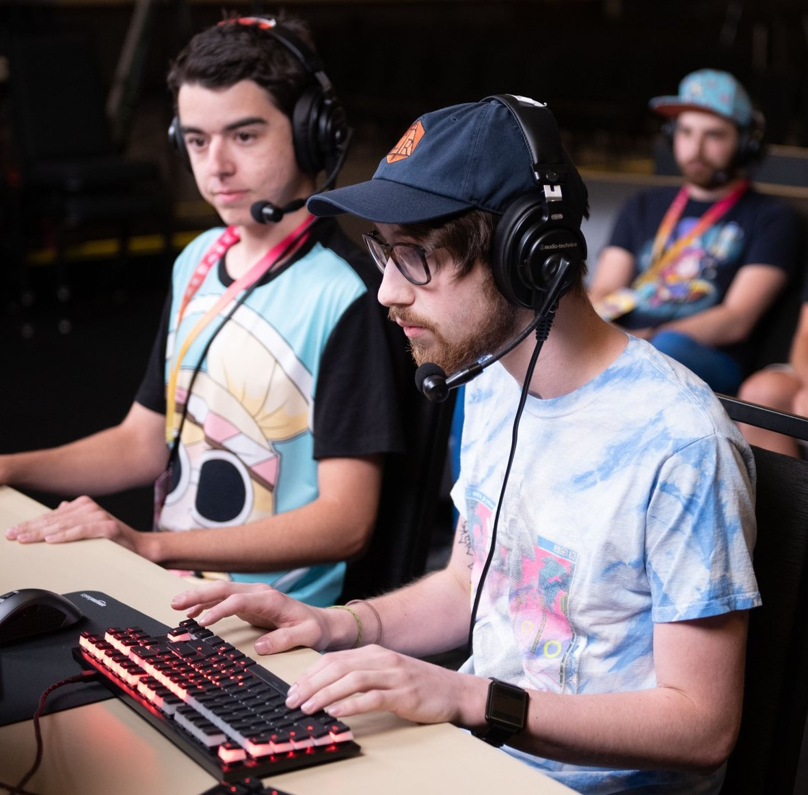

About Me
My name is Calvin Rainey and I am currently enrolled at Algonquin College in Ottawa, Ontario and I am taking the Interactive Media Design program. I have always had an interest in the graphic arts and design from a young age so I am excited to work at honing some of my skills to learn to be a better designer through this program.
Some things that I enjoy doing outside of the program are that I have an interest in drawing, playing video games and enjoying time in nature through camping and other outdoor activities such as riding my bicycle and skateboarding. I am part of AGDQ which is a charity video game marathon that raises money for the Prevent Cancer Foundation and has just past their 10th year of fundraising in 2020.
Hobbies
- Digital Drawing
- Dungeons & Dragons
- Video Games
"Isn't this our time Mr. Hand?" - Jeff Spicoli, Fast Times at Ridgemont High